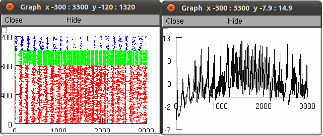

This simulation was tested/developed on LINUX systems, but may run on Microsoft Windows or Mac OS. To run, you will need the NEURON simulator (available at http://www.neuron.yale.edu) compiled with python enabled. Unzip the contents of the zip file to a new directory. compile the mod files from the command line with: nrnivmodl *.mod That will produce an architecture-dependent folder with a script called special. On 64 bit systems the folder is x86_64. To run the simulation from the command line: ./x86_64/special -python mosinit.py then NEURON will start with the python interpreter and load the mechanisms and simulation. Next, the network and inputs will be setup. Then the simulation will be run for 3 seconds of simulation time. The simulation consists of 3 periods: 0-1000 ms (baseline), 1000ms-2000ms (simulated ketamine application), 2000ms-3000ms (return to baseline). The simulation duration is modifiable via the h.tstop parameter in params.py. Note that setup of the network may take 10-30 seconds, depending on your processor speed and amount of RAM. Once the simulation has run, two graphs will be displayed,  showing the spike raster and local field potential. The spike raster is arranged with y-axis as cell identifier and x-axis as time in milliseconds. The y-axis is further arranged in order of cell-types (red=pyramidal, green=basket, blue=OLM). The LFP and raster displayed with the demo are a shortened version of figure 7, which has this caption, "Ketamine effect on network firing. Raster (top) and LFP (bottom) for baseline and ketamine application between the dashed lines." There are no dashed lines displayed in the demo, but the ketamine is applied between 1e3 - 2e3 milliseconds. References: This simulation was used in an article in press at the Journal of Neuroscience: Neymotin SA, Lazarewicz MT, Sherif M, Contreras D, Finkel LH, Lytton WW Ketamine disrupts theta modulation of gamma in a computer model of hippocampus Submitted: January 28th, 2011 Accepted: June 10th, 2011 For questions email: samn at neurosim dot downstate dot edu 20120625 applied updates from Bill that work toward compatibility with Mac OS X: infot.mod was removed and misc.h, stats.mod replaced. 20120920 an update from Sam where h.v_init is set to -65 in params.py, which corrects initialization differences (and therefore different output) when this model is used with nrngui. 20121206 applied updated screenshot.png from Amy Delman which reflects the latest version of the model.